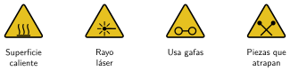
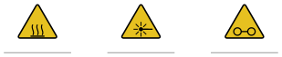

Seguridad en el taller
🤔 Pienso5 min
Qué hago aquí: Piensa un momento y contesta con lo que ya sabes. No pasa nada si no lo sabes: es para empezar.
Escribe o dibuja dos cosas que pueden hacer daño cerca de la impresora 3D.
✏️ Puedes responder escribiendo, con un dibujo o un esquema, o contándolo en voz alta.
📖 Leo y aprendo15 min
Qué hago aquí: Lee despacio, mira los dibujos y los ejemplos, y quédate con la idea clave del final.
Las máquinas del taller son seguras si se usan bien. Hay que conocer sus peligros.

| Peligro | Cómo lo evito |
|---|---|
| Quemaduras | No toco la boquilla ni la cama. Espero a que se enfríen. |
| Luz del láser | Tapa cerrada o gafas especiales. |
| Atrapamiento | Pelo recogido. Nada colgando. No meto la mano con la máquina en marcha. |
| Humo | Ventilo y enciendo el extractor. |
✏️ Hago25 min
Qué hago aquí: Haz las actividades en orden. Empieza siempre por las básicas.
Escribe qué significa cada señal.

Une cada peligro con cómo se evita.
| Quemadura • | • Pelo recogido |
| Luz del láser • | • Esperar a que se enfríe |
| Atrapamiento • | • Tapa cerrada |
Busca en el aula el botón de parada de la Snapmaker y el extintor. Marca cuando los encuentres: Botón de parada Extintor
Lee y responde: «Marcos ve un hilo de plástico en la boquilla y lo quita con los dedos mientras imprime». ¿Qué ha hecho mal?
Haz un cartel con las tres normas que te parecen más importantes para la zona de la impresora.
✏️ Puedes responder escribiendo, con un dibujo o un esquema, o contándolo en voz alta.
🚀 Amplío (si quieres saber más)
Qué hago aquí: ¿Has terminado? Lee la curiosidad o elige el reto. Es voluntario.
Diseña en Tinkercad una señal de «Superficie caliente» para pegar junto a la impresora. Prepárala para grabarla con láser.
✅ Compruebo5 min
Qué hago aquí: Contesta sin mirar la ficha y marca cómo lo llevas.